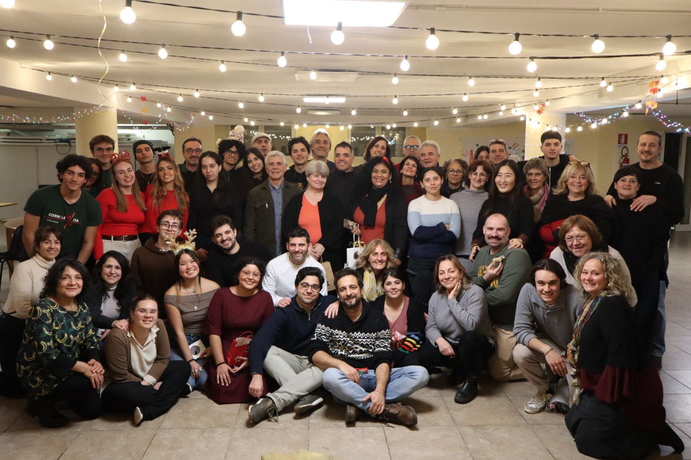
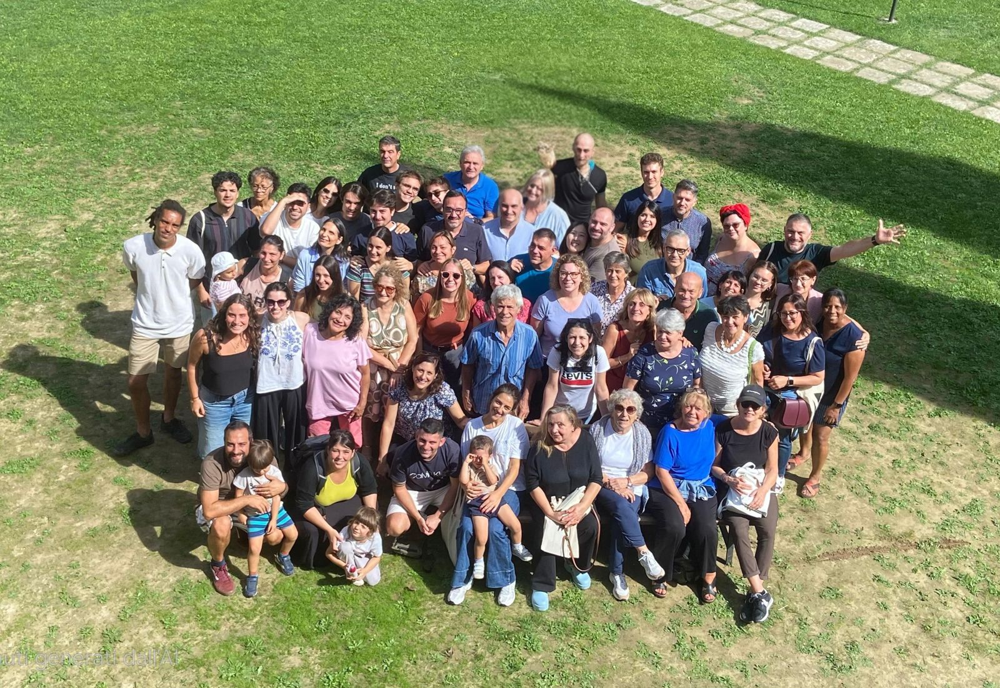
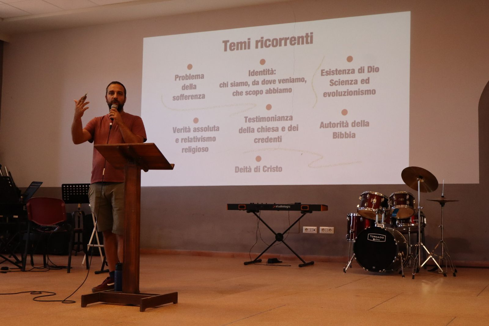
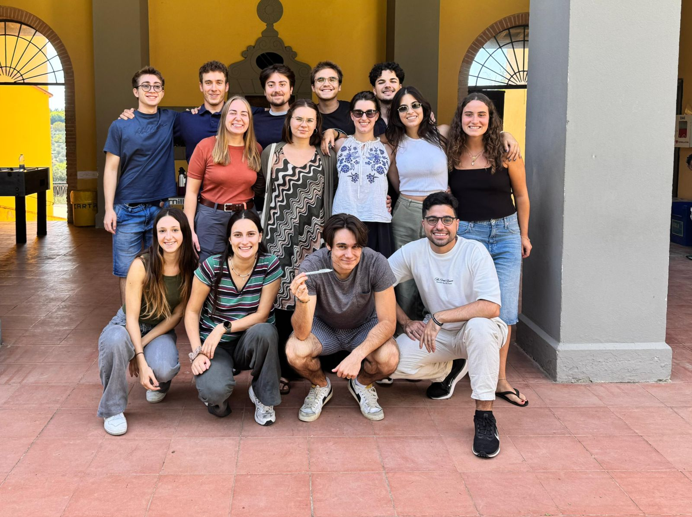
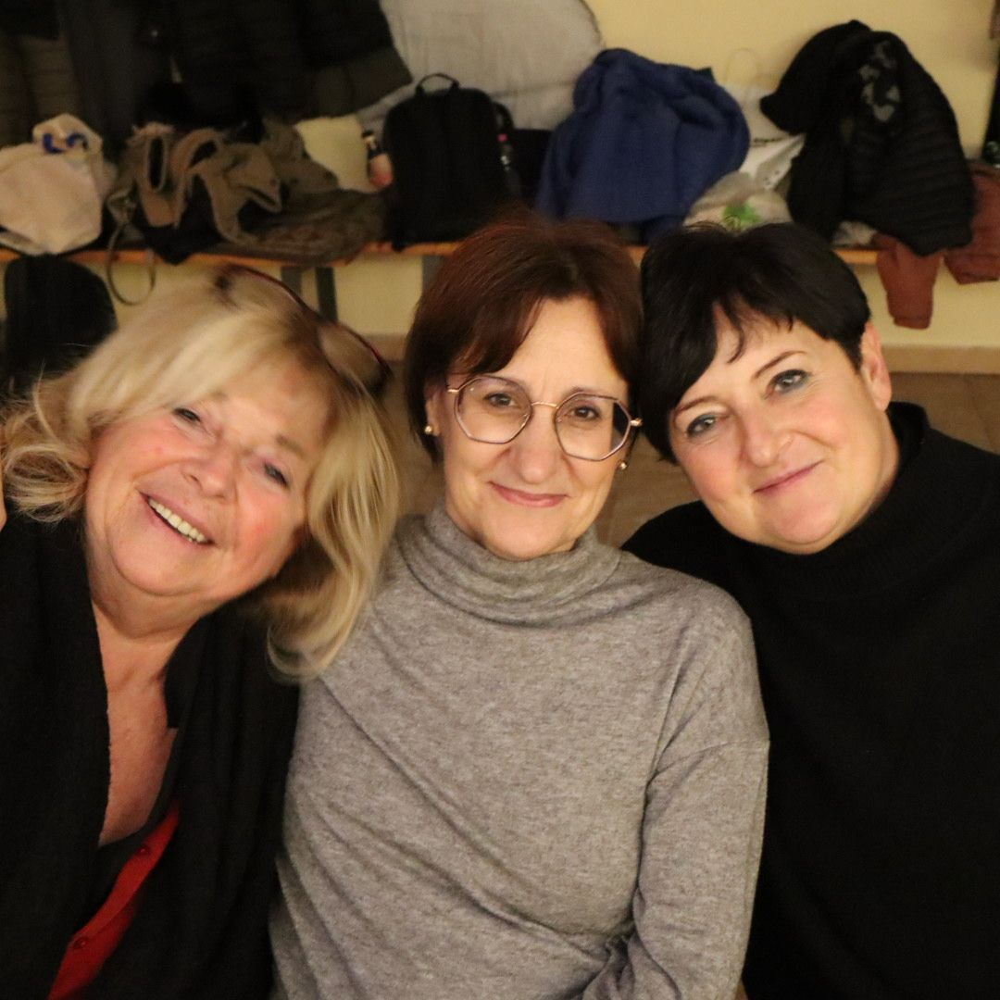

Durante la settimana
Tutti gli incontriUna chiesa centrata nel Vangelo, fondata sull'autorità della Parola di Dio e impegnata nella sana dottrina e nella predicazione espositiva delle Scritture.
«Infatti non mi vergogno del vangelo; perché esso è potenza di Dio per la salvezza di chiunque crede.»
Romani 1:16
Siamo una chiesa che desidera glorificare Dio annunciando Cristo crocifisso e risorto. Crediamo che le Sacre Scritture siano divinamente ispirate, attendibili e infallibili, che la salvezza sia per grazia mediante la fede in Cristo soltanto, e che l'autorità suprema della chiesa sia Cristo.
Ogni domenica ci riuniamo per adorare il Signore, ascoltare la predicazione fedele della sua Parola e vivere la comunione fraterna come famiglia di credenti. Durante la settimana continuiamo a studiare la Bibbia, a pregare e a servirci gli uni gli altri.
Conosci la chiesa




«Nel principio Dio creò i cieli e la terra.»Genesi 1:1
La predicazione espositiva delle Scritture, libro dopo libro, perché la Parola di Dio parli con la sua autorità.
«Predica la parola, insisti in ogni occasione favorevole e sfavorevole, convinci, rimprovera, esorta con ogni tipo di insegnamento e pazienza.»2 Timoteo 4:2
Per crescere nella grazia e nella conoscenza del nostro Signore e Salvatore Gesù Cristo.
Oltre cento persone lo ricevono già ogni giorno nel gruppo WhatsApp. Puoi unirti al gruppo o riceverlo per email, insieme alla predica della settimana.